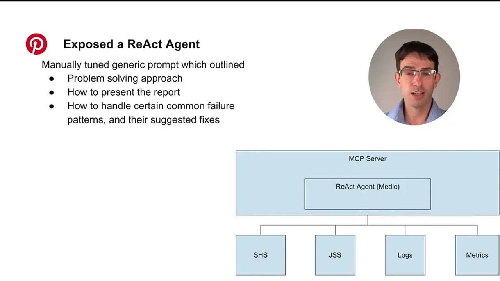
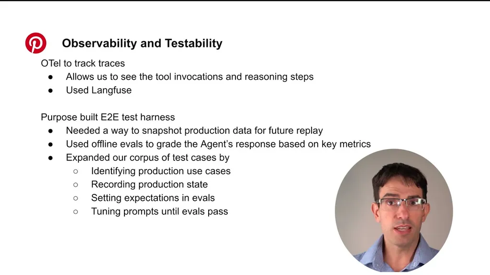
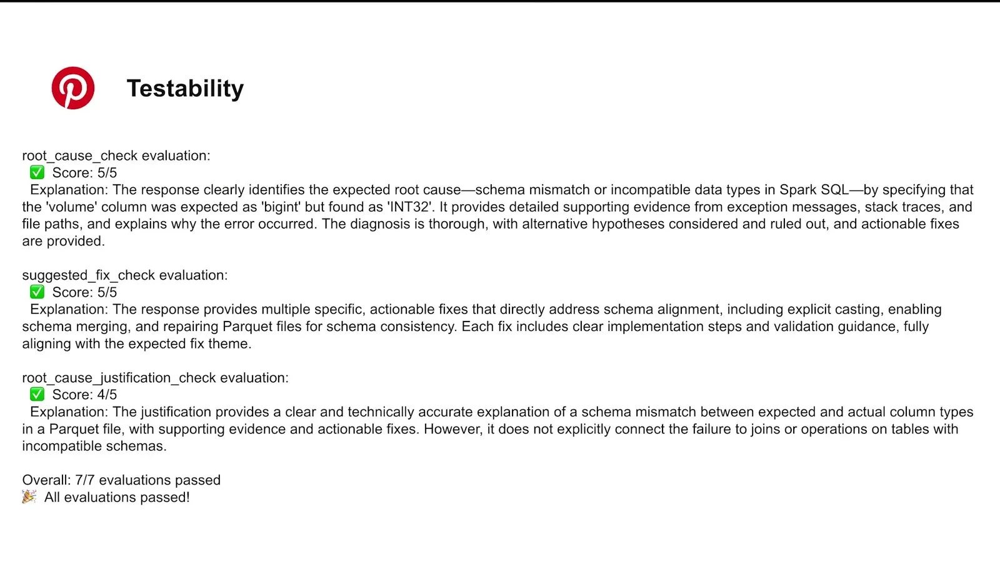
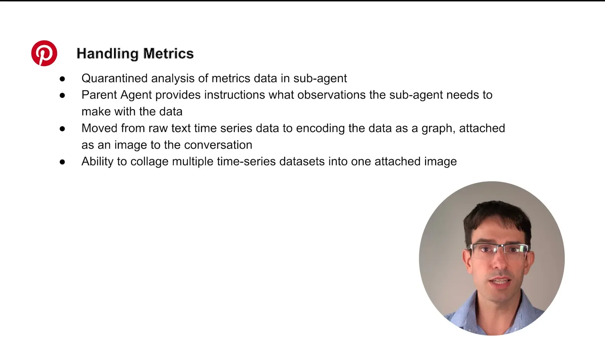

Medic for Apache Spark - First Aid for Failing Jobs
If you only read one thing
- A single-prompt React agent hit unsustainable prompt tuning (fixing one area degraded another) and inconsistent, sometimes context-window-breaking output on large log dumps.
- Converting raw time-series metrics into annotated collage images (rather than feeding raw data) let the team guarantee a fixed token budget regardless of job duration.
- Moving to a multi-agent architecture built on LangGraph's deep agent library (dedicated prompts, subset of MCP tools per agent, built-in to-do list/virtual file system) substantially reduced inaccurate root causes versus the single-agent approach.
The first working prototype was a single React agent with one prompt covering the problem-solving approach, report structure, and failure-pattern examples. Beta trials revealed prompt tuning became unsustainable because improving one area degraded another, response quality was inconsistent, and large tool outputs from logs quickly consumed the context window and stalled reasoning.
“Prompt tuning became unsustainable. One prompt had to do everything, and adding detail in one area degraded the behavior in another”
▶ watch at 02:46“large tool outputs from logs would click quickly consume tokens and brought a halt to the agent's reasoning”
▶ watch at 02:46
The team built a record/playback end-to-end test harness: in record mode the agent calls real downstream systems and saves tool responses as checked-in fixtures; in playback mode the agent runs against those fixtures and generates a report graded against authored offline evals (for example, capping suggested fixes at three).
“In record mode, the agent calls real downstream systems, and tool responses are captured as fixtures”
▶ watch at 04:40
Rather than feeding raw exceptions, the team built an exception classifier pipeline that fingerprints and clusters exceptions, learns which ones commonly appear in successful jobs (treating those as red herrings), and ranks the rest by relevance and recency, exposed to the agent as two MCP tools (top-K truncated exceptions, or full detail for one). For metrics, a quarantine sub-agent converts raw time-series data into an annotated collage image before it enters the main LLM conversation, guaranteeing a fixed token cost regardless of job duration.
“The core idea was we would learn which exceptions commonly appear in successful jobs, treat those as likely red herrings, and filter them out in the future analysis”
▶ watch at 05:41“Images worked better because we could guarantee how many input tokens would be used for analyzing any given Spark job irrespective of its duration”
▶ watch at 07:45
The team rebuilt the single React agent into a multi-agent system on LangGraph's deep agent library, giving each agent a dedicated prompt and subset of MCP tools, plus built-in tracking tools like a to-do list and virtual file system. A triage agent classifies intent and job lifecycle state, parallel research agents score competing failure hypotheses, a supervisor selects the highest-confidence root cause, and a healer agent proposes remediations from a runbook vector database.
“We went from a single react agent with multi-agent architecture. This was accomplished by building on top of LangGraph's deep agent library”
▶ watch at 08:17“We trialed using LangGraph's workflows to make the agent more deterministic, but this approach proved to be brittle compared to the reasoning and acting agent paradigm”
▶ watch at 10:55
Commentary (ours)
The result that deterministic LangGraph workflows proved 'brittle compared to the reasoning and acting agent paradigm' (their word, not just ours) is a useful counter-data-point for teams assuming more deterministic orchestration is always safer than a React-style loop for this kind of open-ended diagnostic task.

Underlying detail — every claim, typed and timestamped (7)
| Stance | Claim | t |
|---|---|---|
| warns | A single prompt covering the entire agent behavior became unsustainable to tune because fixing one area degraded another. | 02:46 |
| warns | Large tool outputs from logs quickly consumed tokens and halted the agent's reasoning process. | 02:46 |
| recommends | Recommends a record/playback harness that captures real tool responses as fixtures, then grades agent output against authored offline evals in playback mode. | 04:40 |
| asserts | The exception classifier learns which exceptions commonly appear in successful jobs and filters those as likely red herrings before analysis. | 05:41 |
| recommends | Converting raw time-series metrics into annotated collage images guarantees a fixed input token cost regardless of job duration. | 07:45 |
| asserts | The team rebuilt the agent as a multi-agent system on LangGraph's deep agent library, with dedicated prompts and MCP tool subsets per agent. | 08:17 |
| warns | Deterministic LangGraph workflows proved more brittle than the reasoning-and-acting agent paradigm for this task. | 10:55 |
Machine-readable copy embedded in this page (script#ontology) and in the corpus ontology.